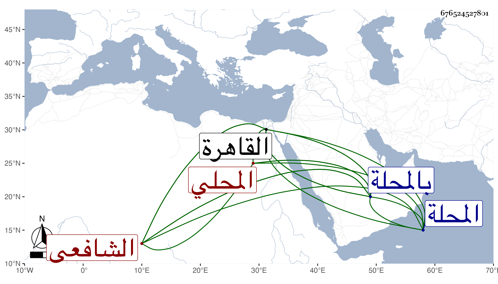

0902Sakhawi.DawLamic.ITO20230111-ara1.EIS1600.676524527801
Biography ID: 676524527801
164
محمد بن محمد بن أبي بكر بن عبد الرحمن ولي الدين أبو عبد الله ابن القطب بن الزين المحلي الشافعي ويعرف بابن مراوح بحاء مهملة كمسامح وبابن قطب أيضا وهو به أشهر . ولد تقريبا سنة خمس وستين وسبعمائة بالمحلة ونشأ بها فحفظ القرآن والعمدة والتنبيه وتصحيحه للاسنوي وبعض ألفية ابن ملك ودخل القاهرة فأكمل حفظها فيها وعرضها ماعدا التصحيح علي الابناسي وابن الملقن وأجازاه وحضر دروس أولهما بحث عليه التنبيه وكذا لازم العراقي وبحث عليه ألفيته الحديثية وسمع عليه ألفية السيرة وكتب عنه عدة مجالس من أمياله والسراج البلقيني وسمع عليه غالب الصحيحين والسنن لأبي داود وجميع الترمذي وسمع أيضا على التاج بن الفصيح والصلاح البلبيسي وابن الشيخة والحلاوي في آخرين وبحث قطعة من الكافية لابن مالك علي الغماري ولازم العز جماعة قريبا من عشر سنين وأذن له في التدريس في الفقه وأصوله والنحو والاعراب والمعاني والبيان والبديع في الافتاء ، وكان إماما عالما فقيها فاضلا مفننا خيرا نيرا ربعة تصدي للقراء بجامع المحلة وصار شيخها بدون مدافع وانتفع به أهل تلك النواحي وحدث باليسير سمع من الفضلاء ، وقدم بأخرة القاهرة وحضر مجلس الاملاء عند شيخنا وكان يشبه به في الهيئة . مات في شعبان سنة ست وأربعين بالمحلة رحمه الله وإيانا .
